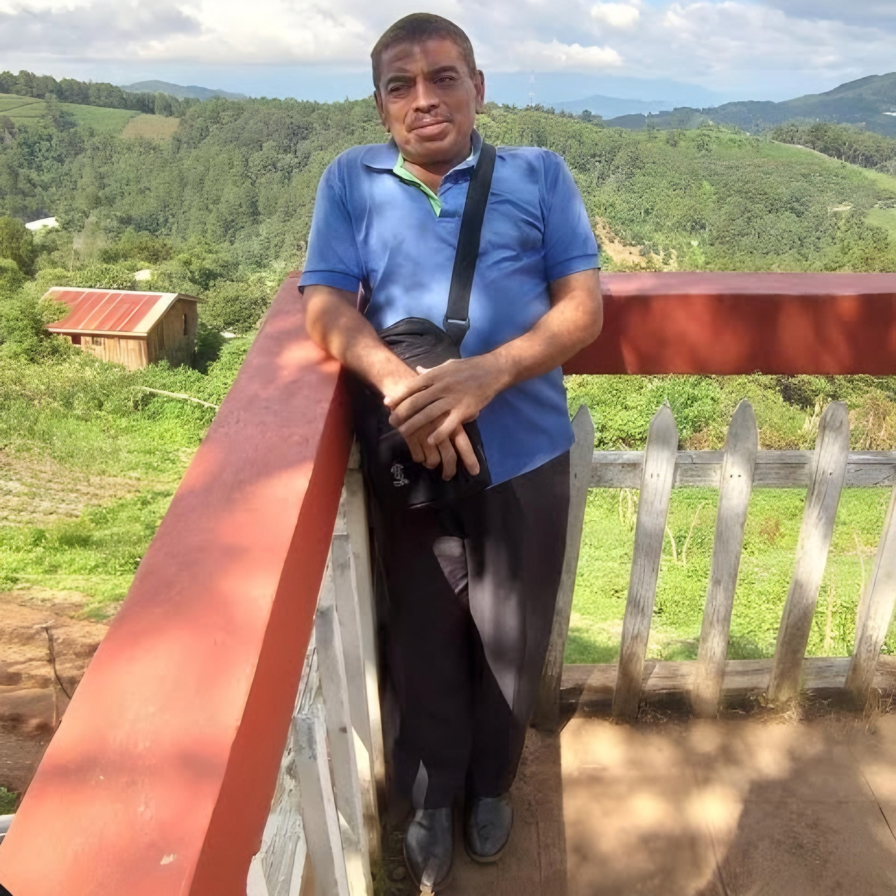

¿Quién es Luchita realmente?

Luchita, o el día lunes es un personaje que podemos encontrar dentro del Centro Escolar Nuevo Lourdes con una probabilidad de 99%
o en las paradas de buses aledañas a Nuevo Lourdes, se dedica a dar clases dentro de dicha escuela durante la mañana y la tarde, algunos
no sienten agrado por este personaje, pero son pocos quienes lo aprecian tanto por como es.
Algunas características

Es alguien que a veces puede ser serio o amargado pero cuando algo le hace gracia se ríe
pelando los dientes, algo muy notorio de él, sus amigos son: Steel Uribe, Paula del Carmen,
Dina Ramírez y la niña Sonia (en su pasado tuvo una amiga animal llamada Chilaquila)
Algunas de sus famosas citas
Luchita tiene algunas citas que han marcado para siempre en la historia, las cuales son: